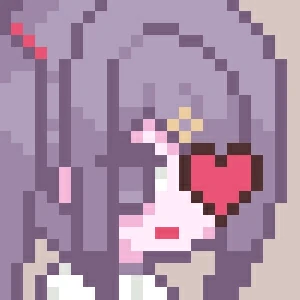
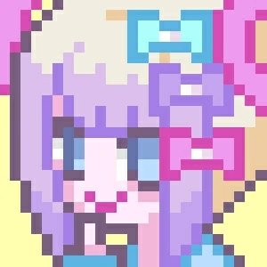
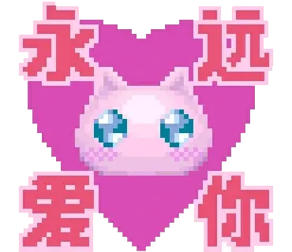
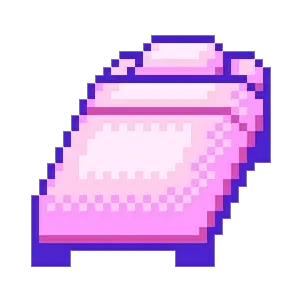
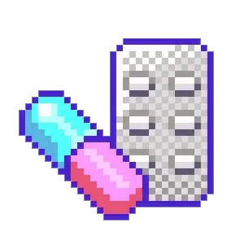
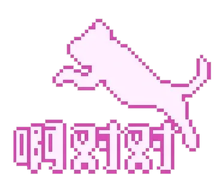

主播女孩重度依賴/NEEDY GIRL OVERDOSE
作者: Patchouli Knowledge
† 昇天 †
† 昇天 †
† 昇天 †
† 昇天 †
† 昇天 †
† 昇天 †
† 昇天 †

| 資訊一覽 | |
|---|---|
| 開發商 | WSS playground |
| 遊戲時長 | 8 - 10 H |
| 類型 | 養成 像素 網絡 |
| 難度 | 較高（二十多結局，少數幾個比較陰間） |
| 分級 | 全年齡（但注意有較多強光閃爍和少量血腥鏡頭） |
 故事梗概
地雷系少女糖糖經過化妝後成爲「超絕可愛天使醬」超天醬開始了她的直播生涯。
而你作爲男朋友 阿P 要幫助這位有點脆弱，時不時神經經的少女安排日常生活，尋找直播的點子，共同向着百萬粉絲的目標前進！
你的每一個決定都會左右最後的結局，在這三十天內和糖糖一起努力榨乾宅宅們的錢包吧！

 人物介紹

🔼日常狀態下的糖糖，看起來乖巧文靜，其實是個時而任性，時而努力，十分渴望得到認可的孩子，精神狀態非常不穩定，喜歡飛葉子和阿P。
🔼直播中的糖糖，化妝COS後變身爲超天醬，是降臨在互聯網來拯救宅宅們的「超絕可愛天使」媚宅主播
阿P：糖糖的男朋友，協助糖糖直播，安排她的日常生活。
 遊戲 PV
動畫來自被牆的 steam
新pv
舊pv
簡評
一句話：這是一部非常優秀的像素風格的養成類遊戲。
適時變奏的音樂，精美的像素CG，無處不在的亞文化neet，更不用說讓人一眼就記住的糖糖，無不體現製作人的用心。
二十多個結局不多也不少，且每個結局都設計的非常好，有偏搞笑的也有深刻黑暗的，你都能在現實中找到對應的實例。
最後更要吹爆的是漢化組，漢化的十分接地氣，融入了非常多我們本土的梗且很自然，
不逛個十年貼吧，不看個四五年VTB，真沒這功力。（優秀的漢化甚至讓部分玩家以爲這是國產遊戲）
雖然是養成類遊戲且有大量隨機事件，但隨機事件不影響整體走勢，對於想肝出全結局的玩家比較友好，快的話6-8H即可。
但該遊戲內含有大量不健康行爲，不建議心智不成熟的和未成年人遊玩，遊戲是遊戲，現實是現實，切勿模仿！
一些題外話

筆者在朋友圈中是知名管人癡，自從這遊戲在一月份火爆宅圈後就很多人按頭讓我玩想看我 “破防”。
相信很多人也是看到很多對這遊戲的評價都集中在「管人殺手」「玩完我取關了嘉然」才對這遊戲感興趣。
筆者於二月份初買的玩了兩個小時打了兩三個結局就擱置了，一是因爲工作忙沒時間玩遊戲，二是因爲這遊戲和管人沒啥關係啊，讓我有點失望（而且糖糖真的很麻煩）。
我自認爲我還算是個V老嗨，從17年開始關注老愛，見證了這個圈子發展至今，
有許多V非常努力提升自己，也有些V擺爛提純，如果你是沖着VTB來玩這遊戲的那可能要失望了（首先糖糖就不是V），
但這遊戲本身絕對不會讓你失望，製作人的目的是讓玩家去體會感受精神疾病患者的世界，
在日本本土玩家也是關注這點，但在國內就歪到了VTB可能這就是國情差異吧。

| 評分 | |
|---|---|
| 人設 | 9/10 |
| 立繪 & CG | 10/10 |
| 劇情 | 8/10 |
| 音樂 | 8/10 |
| 綜合 | 9/10 |
 欣賞糖糖美照
超天醬可愛捏
糖糖你帶我走吧
親爹🔗️imlllsn繪圖（老師圖超色還不速速關注？）
 OP
OP的畫面和歌詞致敬了許多經典Galgame（多爲電波向），你能看出🔗️幾個？（該鏈接有嚴重劇透請確定自己玩夠了不怕劇透才閱讀）
當然本遊戲每個角落都充滿致敬和梗，二老嗨的你肯定能看出不少。
本作製作人にゃるら非常喜歡電波系作品
 遊戲資源
因爲剛出故目前只打過九折，根據該發行商其他遊戲的經驗後續很有可能有更大力度的折扣。
但這價格即使原價也不貴，遊戲質量和內容量真的非常良心，買不了吃虧買不了上當！
steam目前無驗證，可採用退款大法白嫖。或者🔗️盜版（遊戲本體自帶中文，設置裏調）
群友發的🔗️Telegram 貼紙
对于原创内容，文章作者保留所有权利。转载需要许可，如有需要请前往 🔗️Galgame 频道 留言。
另外，复制链接自由，请随意分享。